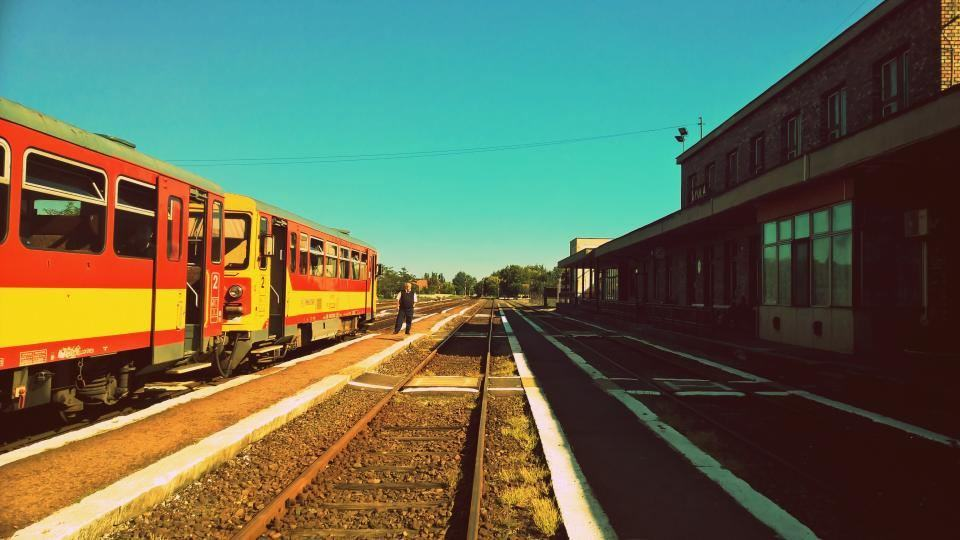

Våra projekt
Ett urval av det vi bygger, utvecklar och förvaltar.
- 2029

Spårväg Uppsala syd
Järnvägsplan och bygghandlingar för 13 kilometer spårväg och 19 hållplatser.
- 2025

Skyfallsplan Gävle centrum
Skyfallsmodell för hela innerstaden och tre översvämningsparker.
- 2028

Henriksdals reningsverk, etapp 4
Projektering av membranteknik för 1,6 miljoner personekvivalenter.
- 2027

Nya Hamar sykehus
Konstruktion och installationsprojektering för 92 000 kvadratmeter.
- 2024

Tampere tram, etapp 3
Utbyggnad till Lentävänniemi med åtta nya hållplatser.
- 2026

River Clyde Flood Scheme
Hydraulisk modellering och projektering av vallar längs Clyde.
Beställarna om oss
Ulf G. · Gävle”Skyfallsmodellen visade att vi kunde ersätta en ny dagvattentunnel för 600 miljoner med tre parker. Det beslutet hade vi aldrig vågat ta utan underlaget.”
Marie D. · Uppsala”En totalkonsult för hela spårvägen gjorde att vi slapp sju olika gränssnitt. Bygghandlingarna kom i tid.”
Fiona M. · Glasgow”Lodmark var de enda som kunde visa blågröna lösningar i full skala. Studieresan till Köpenhamn övertygade hela vår styrelse.”